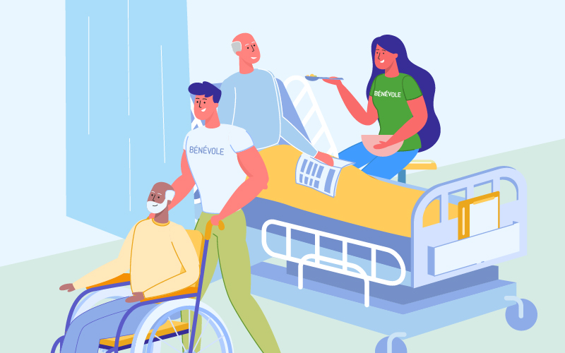

Faire un C'est les Aider
Chaque année en France, il y aurait 400.000 accidents médicaux ! Les erreurs médicales occasionnerraient entre 30.000 et 50.000 décès par an. Au delà des chiffres, Le Lien agit à vos cotés en cas d'erreurs médicales,
« Sans nos adhérents nous ne sommes rien. »
Claude Rembaud
Pourquoi devenir bénévole avec le Lien ?
Rejoindre Le Lien en tant que bénévole, c'est s'engager aux côtés de victimes d'erreurs médicales et de leurs familles dans leur quête de justice et d'indemnisation. Votre soutien permet à ces personnes souvent démunies face à des démarches complexes de ne pas se sentir seules.
Être bénévole chez nous, c'est aussi :
- Faire une différence dans la vie de familles qui ont vécu des épreuves difficiles.
- Contribuer à sensibiliser le grand public aux enjeux des erreurs médicales.
- Participer à des actions concrètes pour renforcer la sécurité des patients.
- Rencontrer une communauté solidaire, prête à partager des expériences humaines enrichissantes.
